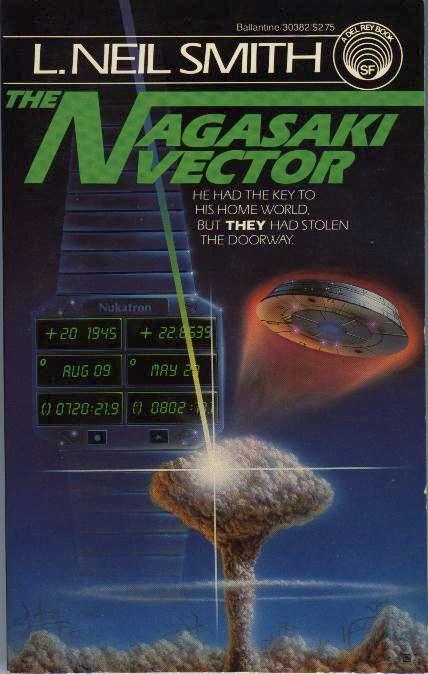

The Nagasaki Vector
by L. Neil Smith
Is a culture with
an absolute regard for individual rights really helpless
against those who would destroy it? Professional time traveler Bernie
Gruenblum hires Win Bear to track down the stolen flying saucer ... who
loves him.
(Based on the
short stories "Grimm's Law", "Folger's Factor", and "Grandfather Clause"
which appeared in Stellar Science Fiction Stories #s 5,
6, & 7, Del Rey Books, 1980 & 1981. See also "The Embarrassment Box"
in New Libertarian #187.)
New York: A Del Rey Book Published by Ballantine Books, 1983
242 pages, mass-market paperback
Library of Congress Catalog Card Number: 82-90891
ISBN 0-345-30382-2
First Edition: April 1983
Cover art by Rick Sternbach